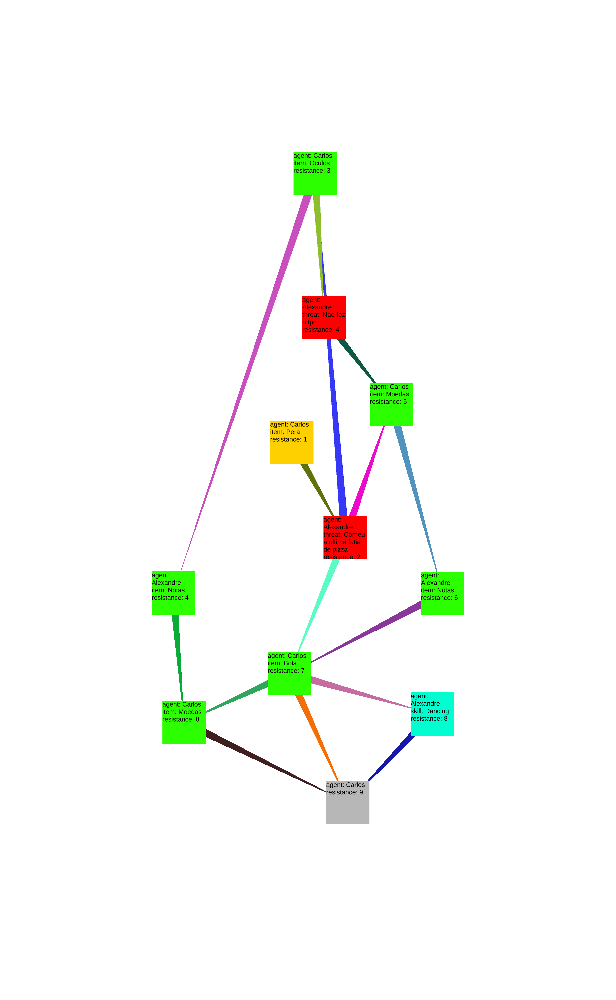

Home

 My Master's thesis saw me designing and implementing a system to procedurally generate social scenarios that could be solved by the player, using as base Franch and Raven's bases of power.
Aditionnaly, I also had to build a game in which to test that system, which posed all sort of challenges both in terms of implementation and in terms of design.
As the solution to each scenario could be represented as a graph of actions the player would take, the problem became one of graph generation, for which I implemented an algorithm that would first build a tree, then connect loose leafs to ensure that all nodes belonged to a path between the starting node and then end node.
Part of the challenge was also building a system that was flexible. The generation algorithm was required to be completely decoupled from the in-game logic. As a result, everything that the generator expected to happened, namely the consequences of the player's actions needed to also be generated and written to the .json file.